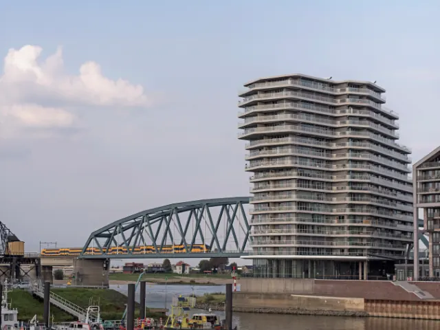

Nijmegen: de oudste stad met de jongste energie
Gepubliceerd op 27 februari 2026

Er zijn steden waar je naartoe verhuist voor een baan, en er zijn steden waar je naartoe verhuist omdat je er niet meer weg wilt. Nijmegen valt nadrukkelijk in die tweede categorie. De oudste stad van Nederland bruist van het leven, de cultuur en een eigenwijsheid die nergens anders in het land zo voelbaar is. Maar wat maakt wonen in Nijmegen nu écht zo bijzonder?
Een stad met karakter en een mening
Nijmegen is trots. Het is de stad die als eerste een regenboogzebrapad aanlegde, waar de fiets heilig is en waar je op een doordeweekse avond in een volle kroeg terechtkomt omdat er weer een lokale band speelt, een lezing wordt gehouden of gewoon omdat het dinsdag is. Die energie is aanstekelijk en trekt al jaren een diverse mix van studenten, jonge professionals, gezinnen en creatieve geesten.
De Radboud Universiteit en het UMC zorgen voor een constante stroom jonge mensen die de stad levendig houden. Maar Nijmegen is meer dan een studentenstad. Het heeft de diepte en het karakter van een stad die al tweeduizend jaar bestaat.
De wijken: voor elk wat wils
Nijmegen is een stad van buurten, en elke buurt heeft een eigen persoonlijkheid. Het Centrum is compact, gezellig en altijd in beweging. Wonen boven een winkel op de Lange Hezelstraat voelt alsof je midden in het kloppend hart van de stad zit.
Het Waterkwartier, ooit een arbeiderswijk, is uitgegroeid tot een van de meest gewilde buurten. Smalle straatjes, gekleurde gevels, buurttuinen en een gemeenschapsgevoel dat je in nieuwbouwwijken zelden vindt. Bottendaal biedt een vergelijkbare sfeer met een iets studentikozer randje. Hier vind je de leukste koffietentjes en vintage winkels.
Gezinnen trekken vaak naar Brakkenstein, Hees of Neerbosch-Oost, waar de huizen ruimer zijn, de tuinen groter en de scholen om de hoek. En dan is er natuurlijk Lent, aan de overkant van de Waal. Sinds de aanleg van het Spiegelwaal-eiland is de Nijmeegse noordkant getransformeerd van een slaperig buitengebied naar een moderne woonwijk met spectaculair uitzicht op de skyline van de stad.
Cultuur, festivals en het goede leven
De culturele agenda van Nijmegen is indrukwekkend voor een stad van deze omvang. De Vierdaagsefeesten in juli zijn het grootste evenement — een week lang feest door de hele stad. Maar daarbuiten is er het hele jaar door van alles te doen: Festival op het Eiland, de Gebroeders van Limburg Festival, Valkhof Festival, het Bevrijdingsfestival in mei en een bloeiende theatrescène rond De Lindenberg en het Openluchttheater.
De Waalkade en het Rivierpark vormen het decor voor eindeloze zomeravonden. Een biertje bij Strandbar The Harbour, een wandeling over het Spiegelwaaleiland of een rondje fietsen door de Ooijpolder. Nijmegen combineert stadsleven met natuur op een manier die weinig steden kunnen evenaren.
En dan het eten. Van de verse markt op de Grote Markt tot restaurants als De Firma, Bistro Mijn en het Rad van Wageningen. De culinaire scene is divers, betaalbaar en vol lokaal initiatief.

Bereikbaarheid en voorzieningen
Nijmegen is goed bereikbaar via de A73 en A15, en het centraal station biedt directe treinverbindingen naar Arnhem, Den Bosch, Utrecht en de Randstad. Voor forensen die in de regio werken is de ligging ideaal, en met de groei van hybride werken is de noodzaak om dagelijks te reizen voor velen afgenomen.
De medische voorzieningen zijn uitstekend dankzij het Radboudumc en het CWZ. Het onderwijsaanbod is breed, van basisonderwijs tot hbo en universiteit. En de sportmogelijkheden zijn eindeloos — of je nu wilt roeien op de Waal, mountainbiken in het Rijk van Nijmegen of gewoon baantjes trekken in het Erica Terpstra Zwembad.
Een huis kopen in Nijmegen
De woningmarkt in Nijmegen is, net als in veel Nederlandse steden, competitief. De gemiddelde verkoopprijs is de afgelopen jaren flink gestegen, met name in populaire wijken als het Waterkwartier en Bottendaal. Toch zijn er nog kansen, zeker in wijken die in opkomst zijn of bij nieuwbouwprojecten aan de noordkant van de stad.
Een goede voorbereiding is het halve werk. Voordat je gaat bezichtigen, is het slim om een helder beeld te hebben van wat je kunt besteden. Met een hypotheek berekenen tool breng je snel in kaart wat je maandlasten zijn bij verschillende koopsommen. Dat scheelt niet alleen teleurstellingen, maar geeft je ook een sterkere positie in een markt waar snel schakelen het verschil maakt.
Nijmegen is een gevoel
Je kunt opsommen wat Nijmegen heeft: de historie, de natuur, de festivals, de voorzieningen. Maar uiteindelijk is het een gevoel. Het is de manier waarop de stad je opneemt, hoe de Waal glimt in het avondlicht, hoe een terrasje op de Grote Markt voelt als thuiskomen. Wie in Nijmegen belandt, blijft er meestal.
Terug naar de beginpagina